Calcolo numerico per la generazione di immagini fotorealistiche
Maurizio Tomasi maurizio.tomasi@unimi.it
In the last lecture we introduced Monte Carlo methods to estimate the integral in the rendering equation:
\begin{aligned} L(x \rightarrow \Theta) = &L_e(x \rightarrow \Theta) +\\ &\int_{2\pi} f_r(x, \Psi \rightarrow \Theta)\,L(x \leftarrow \Psi)\,\cos(N_x, \Psi)\,\mathrm{d}\omega_\Psi. \end{aligned}
We said that it is possible to use the mean method, optimized via importance sampling, to estimate the integral.
To estimate the integral in two dimensions, we first discussed the case of the simple mean method, without using importance sampling.
In this case, the evaluation of the integral requires choosing N random directions \Psi and calculating the value of the integrand. The PDF of the directions is defined through their solid angle \omega, and we saw that
p(\omega) = \frac1{2\pi}.
However, this explains how to evaluate the integral if we already know the value of L(x \leftarrow \Psi) in the integrand, but this is not the general case!
In principle, it should not be difficult to evaluate the term L(x \leftarrow \Psi) inside the integral: just apply the rendering equation recursively.
The recursive call represents the fact that to calculate the radiance leaving a point on the surface we must know the radiance entering that point, and this leads to a chain of calculations.
As in all recursive algorithms, it is necessary to establish a stopping criterion (stopping criterion).
def radiance(self, ray: Ray, num_of_samples=100) -> Color:
hit_record = self.world.ray_intersection(ray)
material = get_material(hit_record)
emitted_radiance = material.get_emitted_radiance(hit_record.surface_point)
# Estimate the integral using Monte Carlo
cum_radiance = Color(0.0, 0.0, 0.0)
for i in range(num_of_samples):
# Create a new (secondary) ray
mc_ray = scatter_ray(..., depth=ray.depth + 1)
# To compute the radiance, we must do a recursive call! Will it ever stop?
mc_radiance = radiance(mc_ray, num_of_samples=num_of_samples)
cum_radiance += material.brdf(...) * mc_radiance
return emitted_radiance + cum_radiance * (1.0 / num_of_samples)The simplest criterion is to limit the number of iterations. After three or four iterations, the cycle ends:
hit_record = self.world.ray_intersection(ray)
material = get_material(hit_record)
emitted_radiance = material.get_emitted_radiance(hit_record.surface_point)
cum_radiance = Color(0.0, 0.0, 0.0)
if ray.depth < 5:
# Compute the MC integral only if we have not gone too deep
for i in range(num_of_samples):
....
# If ray.depth > 5, then "cum_radiance" is zero
return emitted_radiance + cum_radiance * (2 * pi) / num_of_samplesThis method is very effective to limit the computation time. But is it correct?
Even though it is a widely used method, assigning a null value to
radiance when ray.depth exceeds a threshold is not
physically correct!
Since L(x \leftarrow \Psi) \geq 0, “truncating” the contribution of the integral after a certain number of iterations means underestimating the value of the integral: if the radiance is underestimated, a bias is introduced into the solution.
In our case, truncating the recursion will always produce a darker image.
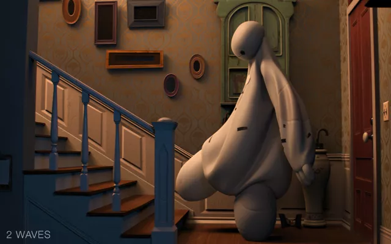
Big Hero 6 (Walt Disney Animation Studios, 2014), 2 reflections
Big Hero 6 (Walt Disney Animation Studios, 2014), 9 reflections
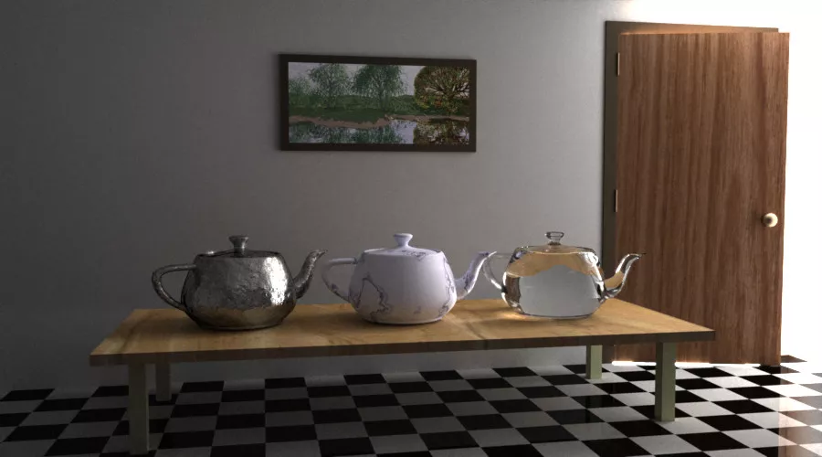
Metropolis Light Transport, Veach & Guibas (1997)
A widely used algorithm in path tracing is Russian roulette, which removes the bias, i.e., the underestimation of radiance, at the cost of increasing uncorrelated (white) noise.
The procedure requires setting a probability 0 \leq q \leq 1 (in real Russian roulette, q = 1/6). This is the algorithm:
The method replaces the radiance L with a random radiance L' as follows:
L' = \begin{cases} \frac{L}{1 - q}\ &\text{if $x > q$},\\ 0&\text{otherwise}. \end{cases}
L' has expected value
E[L'] = E\left[(1 - q) \frac{L}{1 - q} + 0\cdot q\right] = E[L].
There is a probability q of returning zero (underestimation), but if x > q (with probability 1 - q) L is overestimated, as 1 / (1 - q) > 1.
Russian roulette is not a solution without flaws!
Suppose, for example, you choose q = 0.99. In this case, it will be very difficult to return L / (1 - q), because in most cases zero will simply be returned.
On the other hand, the few times that L / (1 - q) is returned, the value L multiplied by one hundred will be returned, i.e., 1 / (1 - 0.99).
Obviously, this implies a significant increase in the variance of the estimate, which means that the image will be dominated by so-called fireflies, although clearly unbiased.
To implement Russian roulette, a minimum threshold is usually set
for the value of depth:
if ray.depth > 2: # …or > 1 if there are no specular surfaces
threshold = compute_threshold(...) # Estimate a reasonable value for "q"
if pcg.random_float() > threshold:
return radiance / (1 - threshold)
else:
return Color(0.0, 0.0, 0.0)This does not introduce a bias, but allows to reduce noise in the image.
For q, I suggest using the maximum value among the R, G, B components of the BRDF at the intersection point.
We have all the theory available to implement the path tracing algorithm!
The number N of samples (directions) used to estimate each integral is a free parameter, and should be chosen depending on the scene and how efficient the path tracer is.
Assuming a threshold for ray.depth equal to m reflections, the total number N_\text{tot} of rays that the code must
simulate is \leq N^m. If you choose
N = 100 and m
= 9, you get N_\text{tot} =
10^{18}: it is important not to overdo it with the value of N!
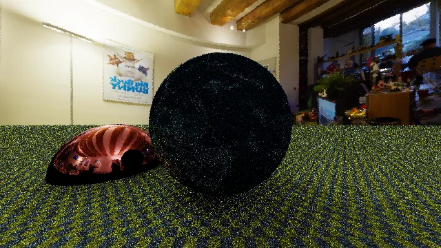
726,939 rays
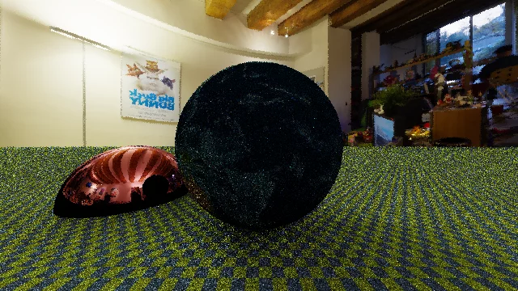
5,010,840 rays
26,343,150 rays
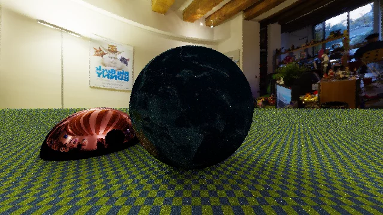
98,875,400 rays
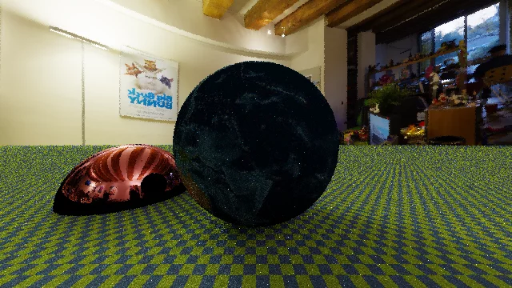
382,384,500 rays
We implemented the code using the mean method to estimate the integral, but this is not optimal!
In the last lesson, we saw that the variance of the mean method can be reduced if we extract random samples according to a “clever” distribution p(\theta, \phi).
What distribution could be “clever” here?
Let’s write once again the integral of the rendering equation:
\int_{2\pi} f_r(x, \Psi \rightarrow \Theta)\,L(x \leftarrow \Psi)\,\cos(N_x, \Psi)\,\mathrm{d}\omega_\Psi.
Suppose we place ourselves in the reference system where \theta and \phi are measured with respect to the normal axis N_x; then the angle between N_x and \Psi is precisely \theta, and therefore
\int_{2\pi} f_r(x, \Psi \rightarrow \Theta)\,L(x \leftarrow \Psi)\,\cos\theta\,\mathrm{d}\omega_\Psi.
\int_{2\pi} \textcolor{#ad3434}{f_r(x, \Psi \rightarrow \Theta)}\, \textcolor{#34ad34}{L(x \leftarrow \Psi)}\, \textcolor{#3434ad}{\cos\theta}\, \mathrm{d}\omega_\Psi.
To choose a “clever” distribution, we should look for a p(x) that resembles the integrand but is at the same time easy to normalize.
There are three terms in the integrand that we need to understand how to combine into a p(\omega):
One solution is to choose p(\omega) \propto \cos\theta. The intuitive sense is that it “pays” more to choose directions more aligned along the normal (i.e., with small \theta), because that’s where most of the radiance comes from.
A better solution, however, is to choose
p(\omega) \propto f_r(x, \Psi \rightarrow \Theta) \cos\theta,
because the f_r function itself can have strong dependencies on the direction, as in the case of reflective surfaces.
On a diffuse surface, the incident radiation is diffused over 2π, and it holds that
f_r(x, \Psi \rightarrow \Theta) = \frac{\rho_d}\pi.
Consequently, to use importance sampling, we need to find a PDF p(\omega) such that
p(\omega) \propto \frac{\rho_d}\pi\,\cos\theta \propto \cos\theta.
This result can be traced back to the Phong distribution (\propto \cos^n\theta).
In the case of a diffuse surface, it holds that
\begin{aligned} &\int_{2\pi} f_r(x, \Psi \rightarrow \Theta)\,L(x \leftarrow \Psi)\,\cos(N_x, \Psi)\,\mathrm{d}\omega_\Psi \approx\\ \approx&\frac1N\sum_{i=1}^N \frac{f_r(x, \Psi_i \rightarrow \Theta)\,L(x \leftarrow \Psi_i)\,\cos\theta}{p(\omega)} =\\ =&\frac{\rho_d}{N}\sum_{i=1}^N L(x \leftarrow \Psi_i), \end{aligned}
where, obviously, it is necessary that the \Psi_i are distributed according to p(\omega) \propto \cos\theta.
Given a certain number N of rays with which to calculate the integral, the use of importance sampling allows us to reduce the variance: for the same N, with importance sampling the image is less noisy.
Note that if we use importance sampling to evaluate the integral, it is not necessary for the code to explicitly calculate the value of f_r: this simplifies in the expression!
The price to pay is that we have to generate random directions with distributions that are generally not uniform.
Let’s now consider the BRDF of a perfectly reflective mirror.
We already know that mirrors obey the law of reflection:
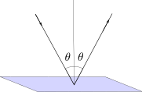
In this case, the BRDF is obviously proportional to a Dirac delta function.
The implementation of the reflective BRDF is very simple because, in the evaluation of the integral, the secondary rays are all aligned along the direction (\theta_r, \phi_r).
From the point of view of vectors, the law of reflection is written as follows:
\vec r = 2(\hat n \cdot \Psi) \hat n - \Psi,
where \vec r is the reflected vector.
In Geometrical Considerations and Nomenclature for Reflectance (Nicodemus, Richmond & Hsia, 1977), it is shown through energy considerations that for an ideal reflective surface, we have
f_r(x, \Psi \rightarrow \Theta) \propto \frac{\delta(\sin^2\theta_r - \sin^2\theta)\,\delta(\psi_r \pm \pi - \psi)}{\cos\theta},
where (\theta, \phi) is obviously the incoming ray direction \Psi, and (\theta_r, \psi_r) is the reflected direction.
The presence of \cos\theta in the denominator means that p(\omega) does not depend on \cos\theta: therefore, we do not have to “weight” the reflected radiance by \cos\theta.
To estimate the integral of the rendering equation using the mean method, we need to generate random directions with a given distribution p(\omega) over the 2π hemisphere.
However, the 2π hemisphere is defined with respect to the normal \hat n, which can have an arbitrary orientation in three-dimensional space!
While the mathematical generation of random directions is clear, from an implementation standpoint, it’s not so simple: we need to change reference frames!
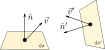
The expressions we derived for generating random directions according to various distributions all assume that \theta is measured starting from the z axis.
When we generate a random direction in that reference frame, we then need to convert the vector to the global system in which the “world” objects are defined.
This task is simple if we use orthonormal bases (ONBs) created ad hoc.
Given an orthonormal basis (ONB) \left\{\hat e_1, \hat e_2, \hat e_3\right\} and a vector \vec v, it holds that
\vec v = \sum_{i=1}^3 \left<\vec v, \hat e_i\right> \hat e_i = v_x \hat e_x + v_y \hat e_y + v_z \hat e_z.
If we have a new ONB \left\{\hat e'_1, \hat e'_2, \hat e'_3\right\}, the vector \vec v changes its representation depending on the basis, from (v_x, v_y, v_z) to (v'_x, v'_y, v'_z):
\vec v' = \sum_{i=1}^3 \left<\vec v', \hat e'_i\right> \hat e'_i = v'_x \hat e'_x + v'_y \hat e'_y + v'_z \hat e'_z = v_x \hat e_x + v_y \hat e_y + v_z \hat e_z.
The simplest way to create a new ONB is based on the fact that from two elements of the basis, we can always derive the third using the cross product:
\hat e_x \times \hat e_y = \hat e_z,\quad \hat e_y \times \hat e_z = \hat e_x,\quad \hat e_z \times \hat e_x = \hat e_y.
To create an ONB, we choose an arbitrary vector \vec g, and set
\hat e'_x = \text{norm}(\hat n \times \vec g),\quad \hat e'_y = \hat n \times \hat e'_x,\quad \hat e'_z = \hat n,
where \text{norm}(\vec v) = \vec v / \left\|\vec v\right\| normalizes the length of the vector.
However, the method for creating a new ONB only works as long as the arbitrary vector \vec g is not aligned with \hat n, otherwise
\hat n \times \vec g = 0.
Therefore, in the algorithm implementation, we need to include a test: if \hat n \approx \vec g, then we replace \vec g with another vector \vec h. Usually, we choose \vec g = (1, 0, 0) and \vec h = (0, 1, 0).
Duff et al. 2017, based on Frisvad, 2012, proposed an alternative algorithm based on quaternions that requires half the execution time (it avoids this check and the normalization).
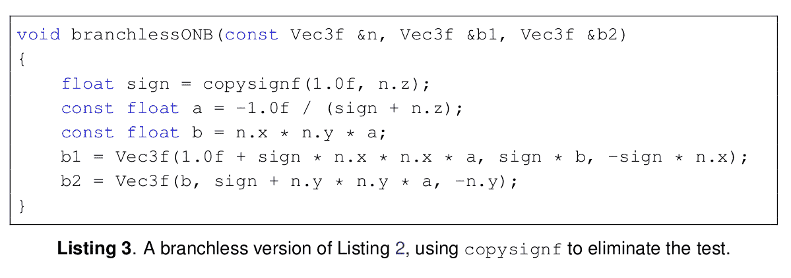
[The authors work at Pixar Animation Studios.]
In the ImageTracer type of our ray tracer, we
assumed that the color of each pixel was determined by the color of the
ray passing
through the center:
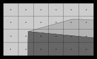
This assumption causes the phenomenon called aliasing, caused by the finite size of the pixels, and the production of the so-called Moiré fringes
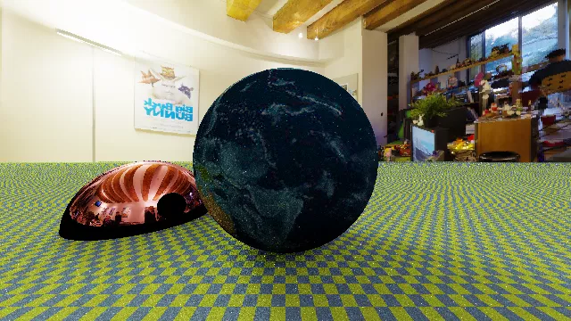
The human eye tends to notice wavy lines in the checkered pattern on the plane.
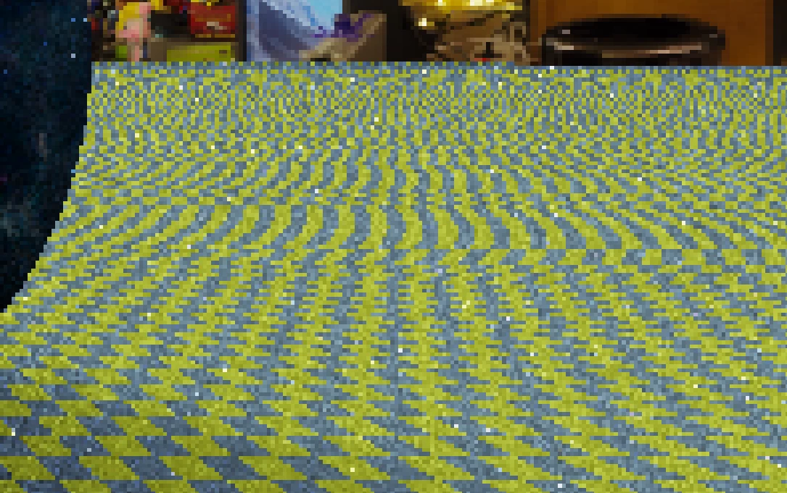
The problem with aliasing is that some pixels cover areas of the screen that contain different colors.
Antialiasing refers to an algorithm that reduces artifacts in an image caused by color variations at scales smaller than a pixel.
A simple way to implement antialiasing is to give our
ImageTracer type the ability to sample a pixel using
multiple rays and then calculate the average of the radiance associated
with each.
It may not be immediately obvious, but the rays we send within the same pixel should not be evenly spaced, otherwise, the problem of Moiré fringes would still occur (albeit to a lesser extent):
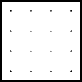
It’s better to use a Monte Carlo method to sample the interior of a pixel.
Randomly extracting points on the [0, 1] \times [0, 1] plane of a pixel is simple: just extract both u and v from a uniform distribution.
However, the result has poor variance behavior because it’s easy for some regions of the pixel to be under-sampled compared to others.
Stratified sampling is a simple method to reduce variance: the pixel space is divided into many sub-squares, and a random position is extracted within each of the squares.
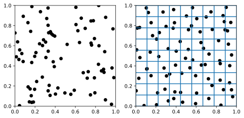
Stratified sampling is simple to implement, but it requires the number of rays to be a perfect square (1, 4, 9, …).
Implementing antialiasing with stratified sampling has the advantage of greatly reducing the grainy appearance of images produced with path tracing.
We have already seen that graininess can be reduced by increasing the number N of secondary rays, but the computation time is proportional to N^m, where m is the maximum recursion depth.
Using antialiasing with N rays, the computation time is only proportional to N: much better!
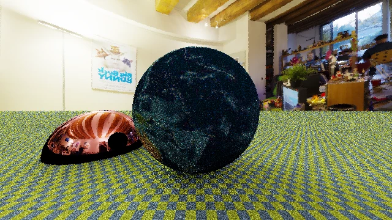
1 ray per pixel
4 rays per pixel
9 rays per pixel
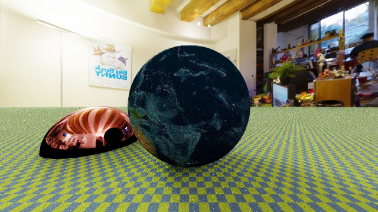
16 rays per pixel
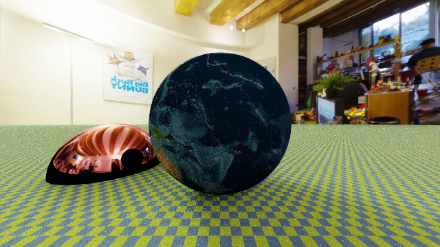
25 rays per pixel
A widely used algorithm for generating 3D images is what we will call point-light tracing. (It is usually called ray tracing or ray casting; however, both terms are very generic, and sometimes indicate different algorithms).
It is based on the consideration that in certain scenes most of the light energy originates from a few objects with a small apparent diameter: a lamp, the sun, etc.
If all the objects in the scene are divided into «luminous» and non-luminous, the integral of the equation can be evaluated over a reduced domain.
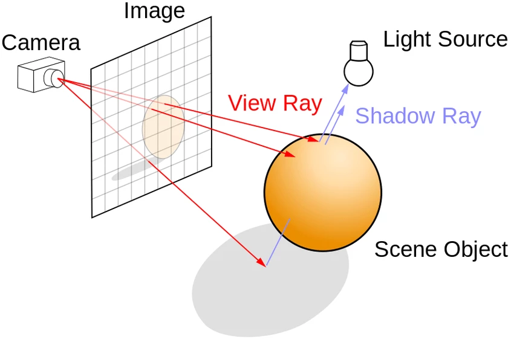
The classic point-light tracing algorithm makes these assumptions:
It is not possible to model diffuse illumination, but the time required to calculate the solution is much shorter.
In the World type, a list of
LightSource objects must be maintained, each of which is a
Point associated with a certain emission
(Color).
Image generation uses ImageTracer as usual to
project rays from Camera to HdrImage (possibly
using anti-aliasing).
When a ray interacts with a surface, it is determined which
LightSource objects are visible and their contribution
modulated by the BRDF is summed.
The algorithm is very fast because it is not recursive (unless you want to implement reflective/refractive surfaces).
In the general case, the farther a light source is, the less bright it is; its radiance is constant, but the solid angle \mathrm{d}\omega in the integral of the rendering equation scales as r^{-2}.
However, if a light source is a Dirac delta, it has no solid angle, and therefore in a point-light tracer one should compensate for this effect.
However, it is not enough to divide the contribution of a light source by r^2, because the units of measurement would not correspond!
Usually in point-light tracers this effect is ignored (see the case of POV-Ray). Alternatively, a reference dimension d can be assigned to each light source, and scaled by (d / r)^2.
We applied importance sampling to the ray tracing equation by writing a probability function
p(\omega) \propto \cos\theta \times f_r.
This trick can greatly improve the rendering quality in the case of BRDFs highly dependent on \theta, but it does not help if the term
L(x \leftarrow \Psi)
in the rendering equation integral varies greatly. To reduce variance in these cases, the (explicit) direct lighting algorithm exists.
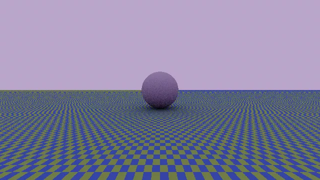
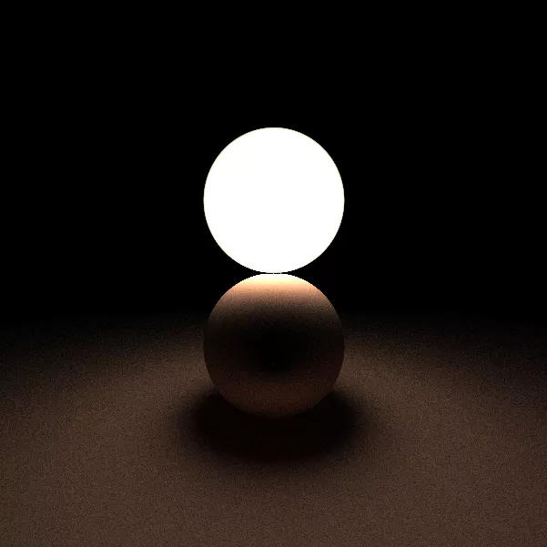
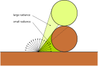
If the p(\omega) used in importance sampling could «weigh» the presence or absence of light sources, convergence would be much faster!
To implement such an optimization, a flag must be added to the
Material type, indicating whether the material is a
«significant» emitter or not.
When calculating the integral of the rendering equation, the 2π domain is divided into two parts:
Material has the «emitter»
flag set to true;The integral related to \Omega_\text{rem} is calculated in the usual way.
The integral related to the solid angle \Omega_\text{lum} is calculated in a special way.
Each Shape must be able to calculate its own solid
angle (easy for planes, spheres and triangles, difficult for CSG
objects!).
Furthermore, a method is needed that returns a random direction towards the emissive object, uniformly distributed within its solid angle (easy for spheres and triangles, difficult for planes and CSG objects!).
The implementation is complicated by the fact that the normalization constants for the various p(\omega) used, and the overlaps of different solid angles, must be taken into account.
Photon mapping is a technique that optimizes the computation time for the solution of the rendering equation. It is illustrated in the book Realistic Image Synthesis Using Photon Mapping (Jensen, 2009).
It is a forward ray-tracing algorithm (the only one we analyze in this course!) which is performed in two steps:
For each light source, a series of rays are emitted in random directions.
At each interaction with a surface, it is chosen with a certain
probability whether to create a photon: this is a
Photon type that contains the position (a
Point) and its energy (i.e., a Color
field).
The list of all created Photon objects (the
photon map) is stored in the World type (it is not
necessary to associate a Photon with the Shape
that produced it).
To calculate L(x \leftarrow
\Psi) in the rendering equation, all Photon objects
within a certain distance d from x are considered.
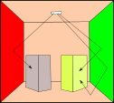
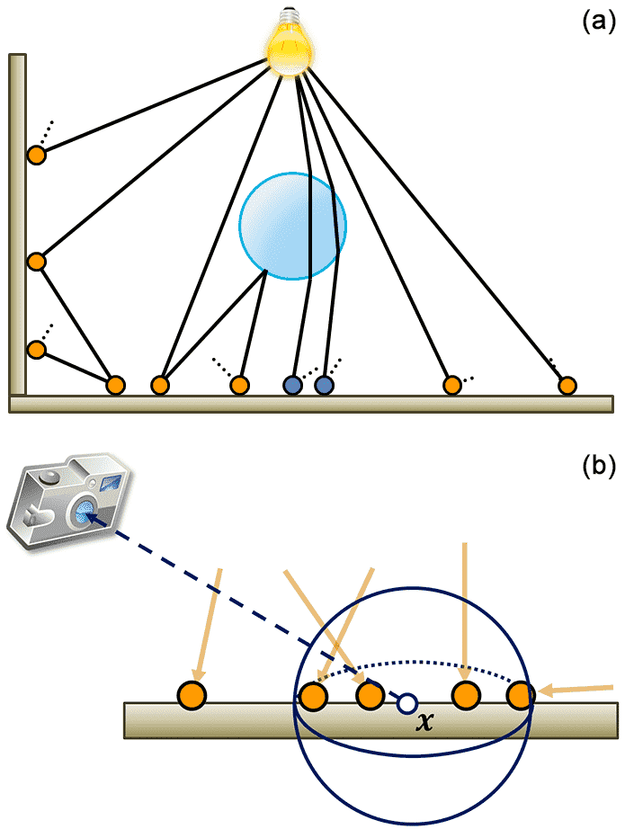
Physically based computer graphics for realistic image formation to simulate optical measurement systems, Retzlaff et al. (2017)
The calculation of photons can be reused for subsequent executions of the path tracing algorithm (possibly saving it to disk).
Searching for the photons closest to a point x can be made very fast using a KD-Tree
structure (stored directly in World).
It is easy to use it to simulate effects related to the light spectrum (prism diffraction, caustics, etc.).
Usually, photon mapping is used only to calculate the indirect light component (i.e., the light that reaches the surfaces but not the light that directly reaches the observer’s eye): for the latter, path-tracing can be used.